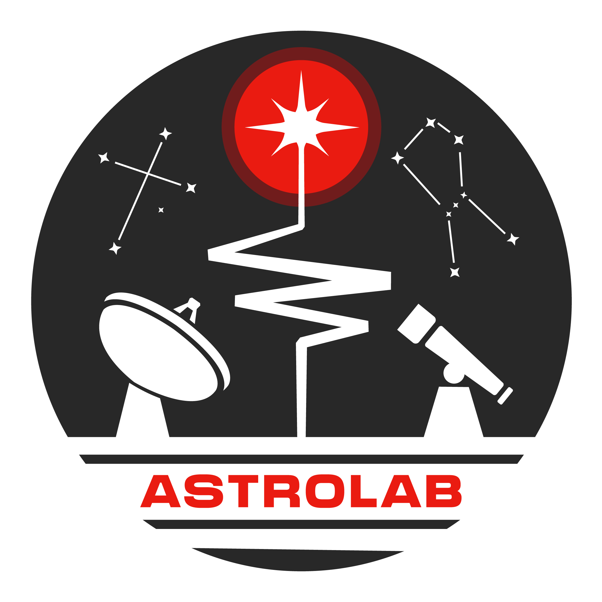
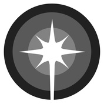

El equipo e integrantes

 ¡Hola somos AstroLab! Somos un equipo compuesto de astrónomos, físicos e ingenieros trabajando codo-a-codo para entender eventos astronómicos desde las ondas largas de radio a el régimen óptico. Nuestro interés científico son pulsars y ráfagas de radio rápidas (FRB; de la sigla en inglés fast radio bursts). En particular, nos dedicamos a diseñar y construir instrumentos astronómicos dedicados a la detección de eventos en el regimen de los milisegundos. Tenemos experiencia en instrumentación de radio (construyendo componentes analógicos y digitales), análisis de datos, e interpretación astrofísica de lo que observamos. Nuestros integrantes trabajan directamente con datos e instrumentos de telescopios como el Atacamam Pathfinder Experiment (APEX), Atacama Large Millimeter/sub-millimeter Array (ALMA), el telescopio de 100-m Effelsberg, Candian Hydrogen Intensity Mapping Experiment (CHIME), y detectores rápidos en ópitos como el Italian quantum eye (Iqueye).
 Cristóbal Braga. Estudiante de pregrado en astronomía de la Universidad de Chile. El interés principal de Cristóbal es radio astronomía y aplicaciones de data science. Su especialización es en el estudio de FRBs, simulaciones de pulsos/ráfagas para sistemas en tiempo real. Cristóbal también posee experiencia en observaciones y búsqueda de pulsos en datos de observación del telescopio de 100-m Effelsberg.
Cristóbal Braga. Estudiante de pregrado en astronomía de la Universidad de Chile. El interés principal de Cristóbal es radio astronomía y aplicaciones de data science. Su especialización es en el estudio de FRBs, simulaciones de pulsos/ráfagas para sistemas en tiempo real. Cristóbal también posee experiencia en observaciones y búsqueda de pulsos en datos de observación del telescopio de 100-m Effelsberg.
 Prof. Tomás Cassanelli. Astrónomo y profesor asistente del Departamento de Ingeniería Eléctrica de la Universidad de Chile. Tomás realizó estudios en ingeniería en la Universidad de La Frontera, un magíster en astrofísica en Universität Bonn, y luego un doctorado en University of Toronto. Sus intereses son ráfagas rápidas (FRBs) tanto en longitudes de onda de radio como en óptico, como: FRBs, pulsares, y su instrumentación de ondas de radio largas (incluyendo interferómetros locales ya grandes distancias) y su instrumentación en óptico, para observar y localizar los eventos de ráfagas rápidas.
Prof. Tomás Cassanelli. Astrónomo y profesor asistente del Departamento de Ingeniería Eléctrica de la Universidad de Chile. Tomás realizó estudios en ingeniería en la Universidad de La Frontera, un magíster en astrofísica en Universität Bonn, y luego un doctorado en University of Toronto. Sus intereses son ráfagas rápidas (FRBs) tanto en longitudes de onda de radio como en óptico, como: FRBs, pulsares, y su instrumentación de ondas de radio largas (incluyendo interferómetros locales ya grandes distancias) y su instrumentación en óptico, para observar y localizar los eventos de ráfagas rápidas.
 Juan Pablo Contreras. Estudiante de pregrado de ingeniería eléctrica de la Universidad de Chile. Juan Pablo lleva a cabo un proyecto de investigación enfocado en desarrollar nuevas técnicas para identificar microestructuras en pulsos de Fast Radio Bursts (FRBs) repetitivos en conjuntos de datos de alta resolución, provenientes del radiotelescopio CHIME. Para abordar el gran volumen y la complejidad de estos datos, utiliza Niagara, el supercomputador de SciNet en la Universidad de Toronto. Este trabajo implica la implementación de técnicas de procesamiento paralelo (multiprocessing) en Slurm, esenciales para gestionar de manera eficiente los datos y optimizar los algoritmos de análisis. El proyecto contempla el diseño de pipelines para el análisis masivo de archivos, y a futuro, colaboraciones con simulaciones personalizadas que permitan validar los métodos desarrollados.
 Constanza Espinoza. Estudiante de pregrado en astronomía de la Universidad de Chile, trabajando con Prof. Cassanelli y Dr. Cruces (ESO).
La investigación de Connie se centra en FRBs que repiten y como podemos extraer información de su periodicidad o cuando éstas posean una fase activa. Sus intereses van más allá de este proyecto en particular, intentando usar FRBs como herramientas para estudiar el contenido de materia del universo (medio intergaláctico) y su uso como sondas cosmológicas.
Constanza Espinoza. Estudiante de pregrado en astronomía de la Universidad de Chile, trabajando con Prof. Cassanelli y Dr. Cruces (ESO).
La investigación de Connie se centra en FRBs que repiten y como podemos extraer información de su periodicidad o cuando éstas posean una fase activa. Sus intereses van más allá de este proyecto en particular, intentando usar FRBs como herramientas para estudiar el contenido de materia del universo (medio intergaláctico) y su uso como sondas cosmológicas.
 Sebastián Manosalva. Estudiante de magíster en ingeniería eléctrica de la Universidad de Chile. Sebastián está interesado en el desarrollo de instrumentación astronómica, en particular en el diseño de sistemas de multiplexing de radio frecuencias (mezcla coherente de radio frecuencias). Actualmente, Sebastián está trabajando en el desarrollo de un sistema de radio frecuencia para el proyecto CHARTS, el cual tiene como objetivo detectar FRBs en Chile.
Sebastián Manosalva. Estudiante de magíster en ingeniería eléctrica de la Universidad de Chile. Sebastián está interesado en el desarrollo de instrumentación astronómica, en particular en el diseño de sistemas de multiplexing de radio frecuencias (mezcla coherente de radio frecuencias). Actualmente, Sebastián está trabajando en el desarrollo de un sistema de radio frecuencia para el proyecto CHARTS, el cual tiene como objetivo detectar FRBs en Chile.
 Pascual Marcone.
Estudiante de pregrado de ingeniería eléctrica de la Universidad de Chile. Aunque la astronomía es un área relativamente nueva para él, Pascual está activamente interesado en explorar diversas ramas tanto de la astronomía aplicada como de ingeniería eléctrica. Por ahora, se inclina hacia el mundo de los instrumentos astronómicos, enfocándose en sus características técnicas, tanto en el dominio de software como de hardware. Actualmente, Pascual está trabajando en etapas preliminares para la exploración de contrapartes principalmente ópticos de eventos de ráfagas rápidas (FRBs y pulsares), enfocandose en la detección de estos con contadores de fotones rápidos.
Pascual Marcone.
Estudiante de pregrado de ingeniería eléctrica de la Universidad de Chile. Aunque la astronomía es un área relativamente nueva para él, Pascual está activamente interesado en explorar diversas ramas tanto de la astronomía aplicada como de ingeniería eléctrica. Por ahora, se inclina hacia el mundo de los instrumentos astronómicos, enfocándose en sus características técnicas, tanto en el dominio de software como de hardware. Actualmente, Pascual está trabajando en etapas preliminares para la exploración de contrapartes principalmente ópticos de eventos de ráfagas rápidas (FRBs y pulsares), enfocandose en la detección de estos con contadores de fotones rápidos.
Vicente Peña. Estudiante de pregrado de ingeniería eléctrica de la Universidad de Chile. Vicente está interesado en el desarrollo de instrumentación astronómica y sistemas ópticos complejos (de longitudes de onda opticas a milimétricas). El proyecto de Vicente es estudiate la superficie y óptica del telescopio APEX usando un método holográfico para recuperar la apertura del telescopio y así estudiar sus aberraciones en función de la elevación del telescopio. La aplicación de este método involucra una nueva base ortogonal para las aberraciones del telescopio en un software específico y realizar un tipo especial de observaciones en APEX.